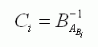

D博士最近设计了一款新的密码锁，密码锁的工作原理如下：

密码A是一个N个数的序列，每个元素都是1至N之间的一个整数。刚刚安装时，密码锁内部会随机出一个1至N的排列B，然后根据A、B产生一组比对码C：
其中表示元素i在B中的位置，比如说：B = {3，1，2}，那么有：B3-1 =1、B1-1 =2。
这种密码锁有非常优异的性能，比如说就算有人通过黑客手段得到C，他们也不可能轻易的得到正确的A输入，而如果没有A，仅仅得到了C也是没有用的。出于此，Y老板向D博士订购了一套这样的密码锁。这时一种D博士没有考虑到的特殊情况发生了：
Y老板是一个非常健忘的人，有一天他竟然忘记了自己密码锁的密码！
D博士立刻从中取出了对应码C，但是因为不知道B，他仍然无法找出A的具体值，于是他把这个艰巨的任务交给你，他的助手。你的任务是，统计所有可能的A序列总数。